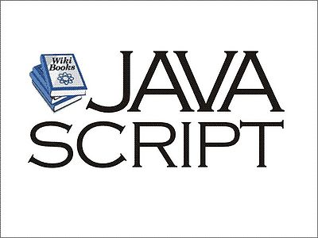

Java è stato creato a partire da ricerche effettuate alla Stanford University agli inizi degli anni Novanta. Nel 1992 nasce il linguaggio Oak (in italiano "quercia"), prodotto da Sun Microsystems e realizzato da un gruppo di esperti sviluppatori capitanati da James Gosling.[3] Tale nome fu successivamente cambiato in Java a causa di un problema di copyright (il linguaggio di programmazione Oak esisteva già).[4] |
|
| 
JavaScript è un linguaggio di scripting orientato agli oggetti comunemente usato nei siti web. Fu originariamente sviluppato da Brendan Eich della Netscape Communications con il nome di Mocha e successivamente di LiveScript, ma in seguito è stato rinominato "JavaScript" ed è stato formalizzato con una sintassi più vicina a quella del linguaggio Java di Oracle. JavaScript è stato standardizzato per la prima volta tra il 1997 e il 1999 dalla ECMA con il nome ECMAScript. L'ultimo standard, di Marzo 2011, è ECMA-262 Edition 5.1. È anche uno standard ISO. |
Java |
| Javascript |